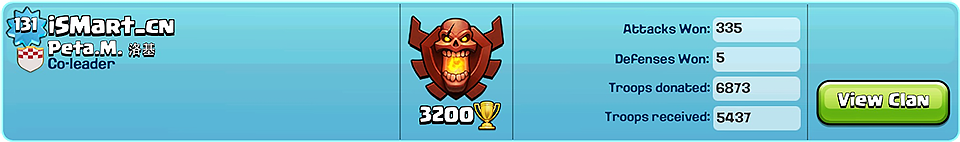

提升机制
洛基家族首创「L.D.R.W.评估系统」，用于 Elder 选举等部落人员考核。 "L" 意为 Level, "D" 意为 Donate, "R" 意为 Receive, "W" 意为 Won。 即选取对部落成员评估最关键的四个因子－等级、捐兵数、收兵数、胜场数，代入复杂的计算体系，最终得出一个全方位客观反映一个成员表现的指数。
成员评估
关于L.D.R.W.评估系统
评估指南
部落成员可随时在本页面上方“成员评估”处输入自己的等级，本赛季进攻胜场数及捐收数（防守胜场数不计），选取自己所在部落，点击"开始评估"，计算自己的综合指数。一旦成员的综合指数到达5.0，就可将自己的赛季信息截屏发到QQ群里，经 Leader 团队验证通过后，成员即可被任命为 Elder。
Tips: 切换Clan会清空捐收数，所以在冲击Elder期间，不建议流动捐收兵

任期制度
Elder 的任命采取「随达随任，任期三月」的制度。即部落中的每位玩家只要在评估体系中达到任命为 Elder 的标准，立即可以被任命为 Elder，任期为三个月。从被任命之日开始的三个月之后根据任期内的表现代入评估体系决定是否可以续任。
自动连任
每个任期开始之际，Leader 团队会截屏记录 Elder 各项成就数值，与任期结束时的数值比较，若满足活跃度条件（此项指标待定），则自动连任，省去了反复冲击Elder的艰难历程。
Tips: Elder任期活跃度采用成就榜数据，所以不会因为切换Clan而清空，各位Elders可以放心流动捐收兵，回到原Clan会自动提升回Elder
部落成员可随时来到此页面计算自己的指数，同时洛基家族也欢迎其他部落的广大 CoC 玩家朋友前来计算试用我们的评估系统。
副首领任命
洛基家族各部落的副首领任命采取团队讨论任命的方式，洛基家族 Leader团队会不定期根据团队成员的提名讨论新任副首领人选。新任副首领经过团队讨论通过，并通过试用期后，会被邀请加入洛基家族 Leader团队，参与洛基家族各项事宜讨论决策。
管理权限
| 部落首领 | 副首领 | 部落长老 | 普通成员 | |
|---|---|---|---|---|
| 晋升 | 所有成员 | 副首领或部落长老 | 无 | 无 |
| 降职 | 所有职位 | 部落长老 | 无 | 无 |
| 踢出部落 | 所有成员 | 部落长老 | 普通成员（有冷却时间） | 无 |
| 接受请求 | 可以 | 可以 | 可以 | 无 |
| 邀请 | 可以 | 可以 | 可以 | 无 |
| 发送邮件 | 可以 | 可以 | 无 | 无 |
| 修改部落信息 | 可以 | 可以 | 无 | 无 |